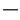

Normal
Formatted
Heading 1
Heading 2
Heading 3
Heading 4
Heading 5
Heading 6
Paragraph
Verbatim

Common
Signature
Date
Table of content
Adjust to text size
TWikiSmartEdit alpha release
---+Sample Heading Sample Text Sample Text Sample text * Sample Bullet
Your signature to copy/paste: